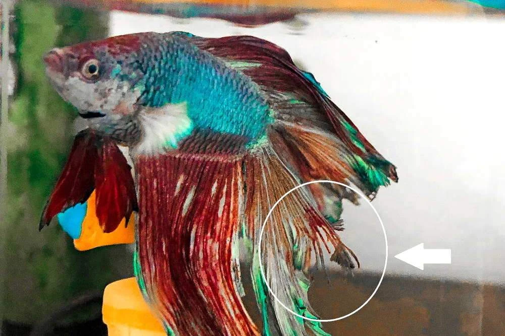
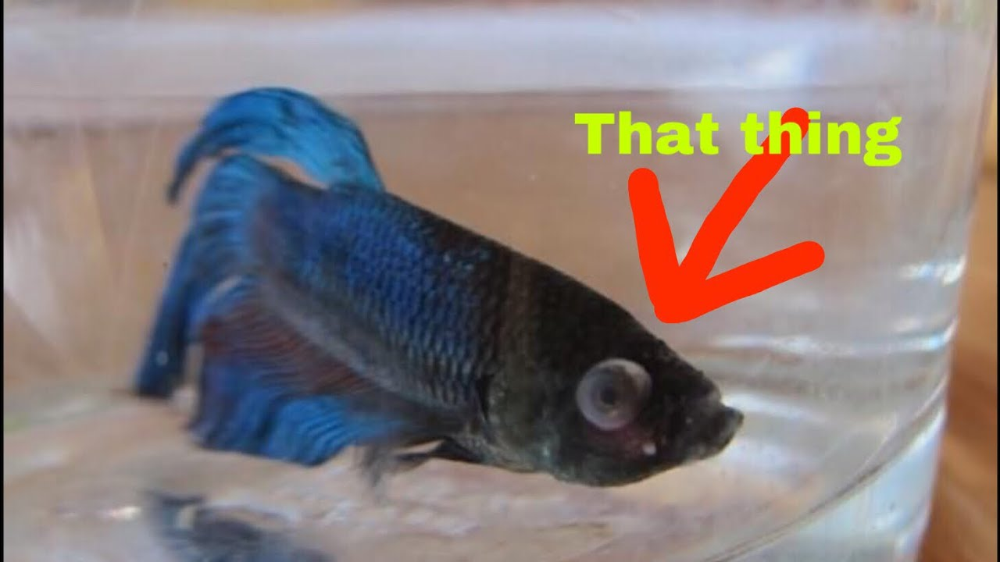
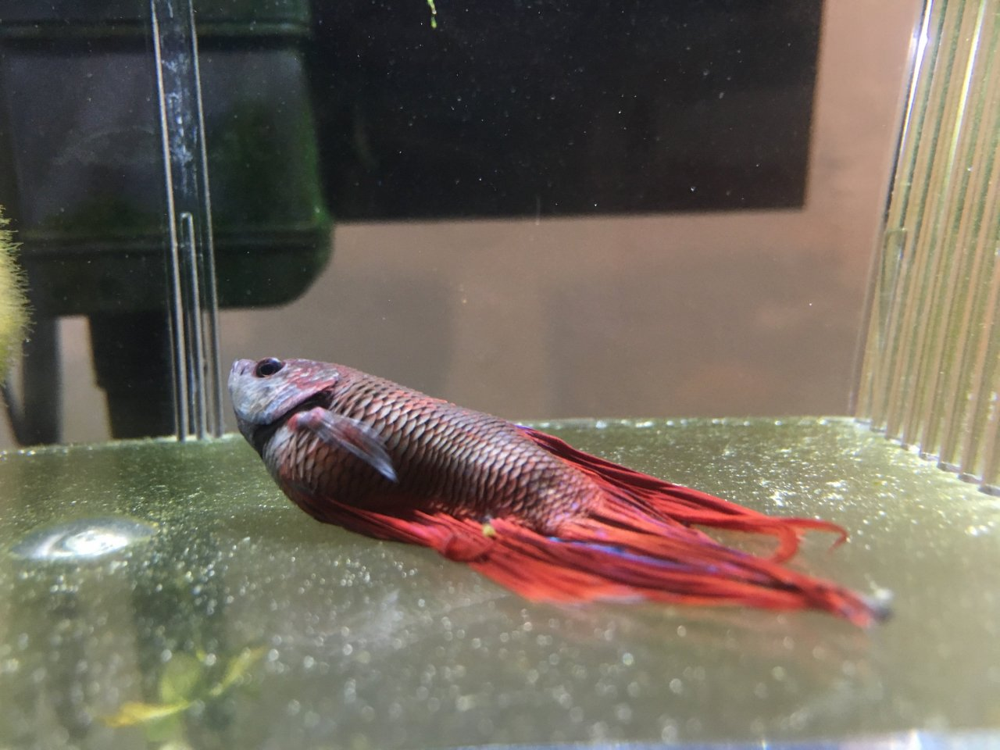

June 1, 2020
Betta Fish Diseases:
Fin Rot:

Fin rot it is a disease which is caused by a bacteria which attacks the fin of a betta fish. Dirty water is the main cause of fin rot when the water is dirty many bacterias develop in the water which causes fin rot to your betta fish.
Fin rot can stress out your betta fish a lot and weaken its immune system. Incase there is some sharp decoration in your aquarium and your betta fishes fin gets torn by that decoration then there is a more chance that it can get fin rot.
If we do not treat fin rot in the early stages then it will lead to body rot.
This happens in the extreme cases from where treatment will nearly become impossible. We can treat this disease easily if we detect it in the early stages.
Symptoms Of Finrot:
Frayed Fins
White Fins
Fins falling apart
Small Holes In Different Parts Of The Fins
Precautions We Must Take To Avoid Fin Rot:
We must make sure we keep the aquarium water clean. Do regular water changes.
Remove all the sharp decorations that is there in your aquarium. Remove any tank mates that nips the fins.
We must put them seperately into another quarantine tank. Test your water quality by using a water test kit made for aquarium fishes.
A good one that most fish keepers use is API TEST KIT.
Using this we can test the water quality of water.
Treatment For Fin Rot:

Fin rot can be treated by using two methods:
The First method involves using aquarium salt to cure fin rot this is one of the best methods and it is used by most of the aquarists to treat fin rot.
While doing this treatment I reccomend you to use this brand of Aquarium salt API Aquarium Salt.
It has showed me a lot of success in the past also to many other aquarists.
To use this in our aquarium we must first perform a 90 % water change and add 1 to 2 tablespoons of salt for a 10 gallon tank the dosage of the salt varies upon the no of gallons your tank is read the instructions carefully before using it.
We have to repeat this process every three days and observe wether the fin rot is reducing or not if it is not reducing then we have to wait for 4 to 5 days and start the treatment again.
Method 2 involves the using of a medicine to treat fin rot. These are medication that are especially created for treating fin rot in betta fish.
Here is one of the most famous medication for treating betta fish fin rot API PIMAFIX. Using this in the aquarium can be very beneficial. Again to use this treatment the right way we have to do a 90 % water change and then add this medication to the water.
We have to repeat this process after every three days to get the best results. Again if there is no change in the fin rot condition of your betta fish after 9 days then we have to stop using this medication for 4 to 5 days and then continue this process again.
Velvet:
Velvet is a disease which is caused by a parasitic infection on betta fish. A betta fish can possibly get velvet if it is exposed to a fish with the same infection in the aquarium or it can come from the aquarium decorations which were there when a fish with velvet was there.
Symptoms:
The symptoms of the velvet disease is very simliar to the disease ich whihc aquarium fishes get often but when a fish has ich the spots on the fish is white in color but when a fish has velvet the spots are of either golden or yellow color. If a shine white light on your fish we cane easily identify if our betta fish has velvet. If it has velvet your betta fish will start rubbing its body on the aquarium decorations available in your aquarium. It will stop eating food and get stressed. It will start losing its color slowly. It will sit in the bottom of the tank with its fins very close to its body.
Precautions We Must Take To Avoid Velvet:
We should clean our aquarium throughouly and all the aquarium decorations in warm water never use soap for cleaning the aquarium decorations. While buying new decorations never ever put it directly into the aquarium without washing it make sure we throughly clean it before putting it in the aquarium. While purchasing a tank mte for your betta fish make sure you purchase a healthy fish and inspect the fish throughly and check wether it shows the signs of the velvet disease incase you see some signs do not buy that fish. Before introducing the fish into the aquarium make sure you put it in a quarantine tank for a while by doing this we can check if the fish has a signs of any diseases. Only after you are sure that it has no signs of velvet or any other diseases introduce to your betta tank.
Treatment For Velvet:

Velvet is a disease that is relatively very easy to cure if spotted early compared to to other diseases that are there. The first step is to raise the temperature of your aquarium using an aquarium heater.
Make sure to move the betta fish into a quarantine tank during the treatment of velvet incase your betta fish has tank mates immeditely move it before the tank amtes gets the velvet disease as the saying goes precuation is better than cure.
The second thing we have to do is add a solution to the aquarium water that is used to treat velvet this solution is like a medicine which helps to get rid of the velvet disease before adding this solution to your aquarium water we must mae sure that we do an 80 % water change.
Another way to cure velvet is to use aquarium salt by adding aquarium salt to your aquarium regularly every 4 days after doing a 90% water change. Both these methods will work well however we must make sure that we do not do the two treatments simulantneously.
We must make sure that we only follow any one method of treatment.
Medicine For Velvet:
Aquarium Salt:
Popeye:

Popeye is another disease betta fishes usually get. It happens due to a pressure buld up which happens behind the eyes of a betta fish. It can be due to our fish accidentately hitting some of the aquarium decorations. ANother reason can be a fight with a tank mates as said earlier bettas are quite aggresive fish they may often pick fights with other tank mates in the tank if any. Another way popeye can occur in betta fish is by bacteria or fungus if popeye happens on both eyes at the same time it can be either a bacteria a fungus or parasites.
Precautions We Must Take To Avoid Popeye:
To avoid popeye we should make sure our betta fish does not fight with its tank mates if it is too aggresive then we must seperate both the fishes.
Make sure that your aquarium water is very clean and check monthly if your filter is working properly. Do weekly water changes.
If the water quality is clean then the chances of parasites and other bacterias coming will be very low. If there are any fish with popeye then move it into another quarantine tank.
Remove any harmful sharp decorations from the aquarium. While taking the betta fish out of its aquarium be very carefull and take it out with the help of a net and make sure that you do not cause any harm to their eyes while taking it out with the help of a net.
Treatment For Popeye:
We can treat popeye using Epsom Salt or Aquarium Salt. Do a 10% water change and add Epsom Salt or Aquarium salt into the water.
Raise the temperature of water using a water heater if you think your betta fish has popeye due to an infection then we have to treat it in a different way.
Using a solution after doing 90 % water change and add the medication to the water do this continously every four days.
Until the popeye goes. If the popeye does not heal even after treating for ten days then we should stop the treatment and switch to aquarium salt or epsom salt.
It can take many months for the eyes to return back to its normal state after its popeye.
Dropsy:

Dropsy is a disease which betta fishes can get it is a severe disease. Treating this disease is much more difficult than all the other disease which betta fishes can get.
Dropsy is not a communicable disease meaning it does not spread to the other fishes in the tank.
Dropsy is usually caused by the swelling of kidneys the bacteria causing it is very harmful. It gives the betta fish a pine cone shape appearance.
Symptoms Of Dropsy:
The scales of your betta fish will be raised. It will have a bloated belly.
It will stop eating food and it will be stressed and tired.The betta fish will have a pine cone appearance.
The face of your betta fish will be very pale. It will stop losing its color and will be very stressed.
Your fish will start swimming in the surface of your aquarium. The skin or fins of the fish will turn red in color.
Precautions We Must Take To Avoid Dropsy:
To avoid your fish from getting dropsy we can take a few precautions these include keeping the water of your tank clean we need to make sure that we do regular water changes and test the quality of our water using a water test kit.
Provide good quality food to our betta fish and also make sure that the decorations in the aquarium are cleaned properly.
brClean out all the uneaten food which is in the aquarium that has sunk in the bottom of the tank with the help of a gravel cleaner.
Treatment For Dropsy:
First of all we must take the sick betta fish and put it in a quarantine hospital tank to treat it. Then we can treat the tank using aquarium salt or Epsom salt.
Do a 70 % water change before adding the salt. Feed your fish with an antibiotic fish food.
Adding Maracyn 2 into the aquarium can help in treating dropsy for betta fish. Picture attached below.
This medicine has been very helpful for many people it is great for treating your betta fish.
Even after 10 days of treatment your fish does not show any improvement then you must stop this treatment because the cause of dropsy is not bacterial if it was bacterial then the aquarium salt could have healed it and if the antibiotic fish food is also not doing anything that means that the dropsy is incureable you cannot heal your betta fish.